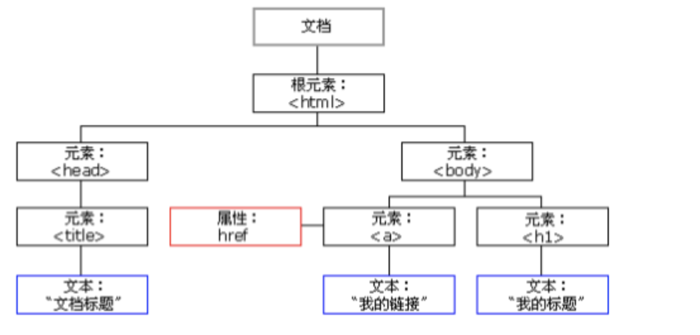
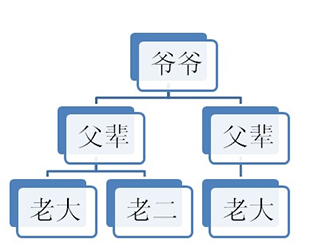
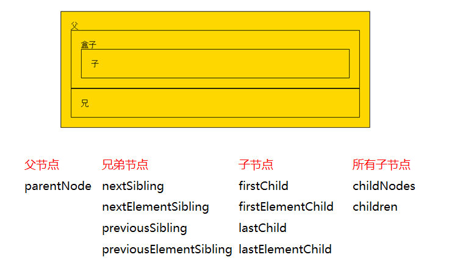
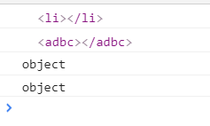

DOM：文档对象模型。DOM 为文档提供了结构化表示，并定义了如何通过脚本来访问文档结构。目的其实就是为了能让js操作html元素而制定的一个规范。
DOM就是由节点组成的。
HTML加载完毕，渲染引擎会在内存中把HTML文档，生成一个DOM树，getElementById是获取内中DOM上的元素节点。然后操作的时候修改的是该元素的属性。
DOM的数据结构如下：

上图可知，在HTML当中，一切都是节点：
元素节点：HMTL标签。
文本节点：标签中的文字（比如标签之间的空格、换行）。
属性节点：标签的属性。
整个html文档就是一个文档节点。所有的节点都是Object。
找对象（元素节点）
设置元素的属性值
设置元素的样式
动态创建和删除元素
事件的触发响应：事件源、事件、事件的驱动程序
DOM节点的获取方式其实就是获取事件源的方式
操作元素节点，必须首先找到该节点。有三种方式可以获取DOM节点：
var div1 = document.getElementById("box1"); //方式一：通过id获取单个标签
var arr1 = document.getElementsByTagName("div1"); //方式二：通过 标签名 获得 标签数组，所以有s
var arr2 = document.getElementsByClassName("hehe"); //方式三：通过 类名 获得 标签数组，所以有s既然方式二、方式三获取的是标签数组，那么习惯性是先遍历之后再使用。
特殊情况：数组中的值只有1个。即便如此，这一个值也是包在数组里的。这个值的获取方式如下：
document.getElementsByTagName("div1")[0]; //取数组中的第一个元素
document.getElementsByClassName("hehe")[0]; //取数组中的第一个元素DOM的节点并不是孤立的，因此可以通过DOM节点之间的相对关系对它们进行访问。如下：

节点的访问关系，是以属性的方式存在的。
JS中的父子兄访问关系：

这里我们要重点知道parentNode和children这两个属性的用法。下面分别介绍。
调用者就是节点。一个节点只有一个父节点，调用方式就是：
节点.parentNode
(1) nextSibling
指的是下一个节点（包括标签、空文档和换行节点）
火狐、谷歌、IE9+版本：都指的是下一个节点（包括标签、空文档和换行节点）。
IE678版本：指下一个元素节点（标签）。
(2) nextElementSibling
火狐、谷歌、IE9+版本：都指的是下一个元素节点（标签）。
总结：为了获取下一个元素节点，我们可以这样做：在IE678中用nextSibling，在火狐谷歌IE9+以后用nextElementSibling，于是，综合这两个属性，可以这样写：
下一个兄弟节点 = 节点.nextElementSibling || 节点.nextSibling
previous的中文是: 前一个
(1) previousSibling
火狐、谷歌、IE9+版本：都指的是前一个节点（包括标签、空文档和换行节点）。
IE678版本：指前一个元素节点（标签）。
(2) previousElementSibling
火狐、谷歌、IE9+版本：都指的是前一个元素节点（标签）。
总结：为了获取前一个元素节点，我们可以这样做：在IE678中用previousSibling，在火狐谷歌IE9+以后用previousElementSibling，于是，综合这两个属性，可以这样写：
前一个兄弟节点 = 节点.previousElementSibling || 节点.previousSibling
获得任意一个兄弟节点：
节点自己.parentNode.children[index]; //随意得到兄弟节点1.firstChild：
火狐、谷歌、IE9+版本：都指的是第一个子节点（包括标签、空文档和换行节点）。
IE678版本：指第一个子元素节点（标签）。
2.firstElementChild
火狐、谷歌、IE9+版本：都指的是第一个子元素节点（标签）。
总结：为了获取第一个子元素节点，我们可以这样做：在IE678中用firstChild，在火狐谷歌IE9+以后用firstElementChild，于是，综合这两个属性，可以这样写：
第一个子元素节点 = 节点.firstElementChild || 节点.firstChild
1.lastChild
火狐、谷歌、IE9+版本：都指的是最后一个子节点（包括标签、空文档和换行节点）。
IE678版本：指最后一个子元素节点（标签）。
2.lastElementChild
火狐、谷歌、IE9+版本：都指的是最后一个子元素节点（标签）。
总结：为了获取最后一个子元素节点，我们可以这样做：在IE678中用lastChild，在火狐谷歌IE9+以后用lastElementChild，于是，综合这两个属性，可以这样写：
最后一个子元素节点 = 节点.lastElementChild || 节点.lastChild
1.childNodes：标准属性。返回的是指定元素的子节点的集合（包括元素节点、所有属性、文本节点）。是W3C的亲儿子。
火狐、谷歌等高本版会把换行也看做是子节点。
用法：
子节点数组 = 父节点.childNodes; //获取所有节点。2.children：非标准属性。返回的是指定元素的子元素节点的集合。
它只返回HTML节点，甚至不返回文本节点。
在IE6/7/8中包含注释节点（在IE678中，注释节点不要写在里面）。
虽然不是标准的DOM属性，但它和innerHTML方法一样，得到了几乎所有浏览器的支持。
用法：
子节点数组 = 父节点.children; //获取所有节点。用的最多。上一段的内容：节点的访问关系都是属性。
节点的操作都是函数（方法）
格式如下：
新的标签(元素节点) = document.createElement("标签名");比如，如果我们想创建一个li标签，或者是创建一个不存在的adbc标签，可以这样做：
<script type="text/javascript">
var a1 = document.createElement("li"); //创建一个li标签
var a2 = document.createElement("adbc"); //创建一个不存在的标签
console.log(a1);
console.log(a2);
console.log(typeof a1);
console.log(typeof a2);
</script>结果：

插入节点有两种方式，它们的含义是不同的。
方式1：
父节点.appendChild(新的子节点);解释：父节点的最后插入一个新的子节点。
方式2：
父节点.insertBefore(新的子节点,作为参考的子节点);解释：
在参考节点前插入一个新的节点。
如果参考节点为null，那么他将在父节点最后插入一个子节点。
格式如下：
父节点.removeChild(子节点);解释：用父节点删除子节点。必须要指定是删除哪个子节点。
如果我想删除自己这个节点，可以这么做：
node1.parentNode.removeChild(node1);格式如下：
要复制的节点.cloneNode(); //括号里不带参数和带参数false，效果是一样的。
要复制的节点.cloneNode(true);括号里带不带参数，效果是不同的。解释如下：
不带参数/带参数false：只复制节点本身，不复制子节点。
带参数true：既复制节点本身，也复制其所有的子节点。
我们可以获取节点的属性值、设置节点的属性值、删除节点的属性。
我们就统一拿下面这个标签来举例：
<img src="images/1.jpg" class="image-box" title="美女图片" alt="地铁一瞥" id="a1">下面分别介绍。
方式1：
元素节点.属性;
元素节点[属性];举例：（获取节点的属性值）
<body>
<img src="images/1.jpg" class="image-box" title="美女图片" alt="地铁一瞥" id="a1">
<script type="text/javascript">
var myNode = document.getElementsByTagName("img")[0];
console.log(myNode.src);
console.log(myNode.className); //注意，是className，不是class
console.log(myNode.title);
console.log("------------");
console.log(myNode["src"]);
console.log(myNode["className"]); //注意，是className，不是class
console.log(myNode["title"]);
</script>
</body>方式2：
素节点.getAttribute("属性名称");
例子：
console.log(myNode.getAttribute("src"));
console.log(myNode.getAttribute("class")); //注意是class，不是className
console.log(myNode.getAttribute("title"));方式1和方式2的区别在于：前者是直接操作标签，后者是把标签作为DOM节点。推荐方式2。
方式1举例：（设置节点的属性值）
myNode.src = "images/2.jpg" //修改src的属性值
myNode.className = "image2-box"; //修改class的name方式2：
元素节点.setAttribute(属性名, 新的属性值);例子：
myNode.setAttribute("src","images/3.jpg");
myNode.setAttribute("class","image3-box");
myNode.setAttribute("id","你好");格式：
元素节点.removeAttribute(属性名);例子：
myNode.removeAttribute("class");
myNode.removeAttribute("id");